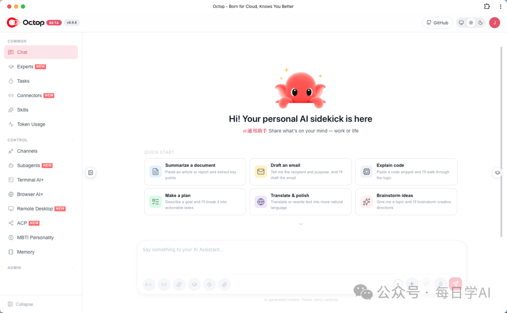

腾讯云开源 Octop：自托管多用户多 Agent AI 助手（WorkBuddy 底层）
来源：微信公众号 归档日期：2026-09-17 抓取状态：成功 原文字符：6302｜配图：1 张
摘要速览
- 腾讯云 2026-09-14 发布 Octop 1.0.0 正式版并开源（MIT，截至 09-16 有 2,860 star），定位开源、自托管、多用户、多 Agent，是商用 WorkBuddy 的底层开源版（前身为 LightClaw ACE）。
- 形态为 Python 包 + Web 控制台，一条
octop run同时跑起控制台、命令行、IM 通道与定时任务，配置、对话、工作区、凭据全部存本地~/.octop/。 - 核心设计一：隔离——管理员创建多成员账号，每人独立记忆、工作区与专家配置，JWT 认证按用户划分 Agent 与工作区权限。
- 核心设计二：记忆跟工作区走而非跟模型走——基于 harness-memory 分层召回 + 全文检索并绑定工作区，切换模型后上下文与偏好保留。
- 内置专家库（运维工程师、育儿管家、证券观察员老钱、腾讯云 API 专家等，支持对话中点名），Connector 接入外部系统，可开浏览器/敲终端/远程操控桌面，能接进飞书、钉钉、企业微信。
核心内容
针对四个长期未解决的问题：记忆缺乏连续性、多用户支持不足、工具与外部系统连接成本高、复杂任务执行稳定性有限。
- 多用户隔离：系统能力共享，而身份/数据/上下文隔离；按用户划分 Agent 与工作区权限。
- 工作区绑定的记忆：记忆不依赖具体模型，换模型不丢上下文，解决"每个模型都要重新自我介绍"的问题。
- 部署形态：全本地存储，自托管不依赖云端；一条命令起全家桶（控制台 + CLI + IM + 定时任务）。
- 生态接入：IM 通道原生支持飞书/钉钉/企业微信；Connector 连接外部系统；浏览器、终端、桌面操控内置。
可执行启发
- 团队需要多成员共享一个自托管 AI 助手时，可用
pip装 Octop 试跑，评估其按用户隔离与工作区记忆是否满足需求。 - 设计自己的 Agent 记忆系统时，参考"记忆绑定工作区而非模型"的思路，避免上下文随模型切换丢失。
归属：[[02-输入/按主题/工具与技术/_index|工具与技术]]
我的想法
（待补充）
原文沉淀
目录
📮 摘要 腾讯云开源的 Octop，能把一台电脑变成全家或小团队的 AI 中枢：一条命令跑起来，每人独立账号、独立记忆、独立专家团；能自己开浏览器、敲终端、远程操控桌面；还能接进飞书、钉钉、企业微信。MIT 协议，数据全留在本地的 ~/.octop/ 目录。
腾讯云开源了一个「全家共用」的 AI 助手
9 月 14 日，腾讯云开源的 AI 助手 Octop 发布了 1.0.0 正式版。
Octop 的名字来自章鱼（Octopus）。官方站点给的解释是三个词：八爪并展、灵活多变、可同时处理多项任务。
一句话说清定位：一个开源、自托管的多用户、多 Agent AI 助手。
这里有两个词值得稍微展开。「多 Agent」指的是由多个各有分工的 AI 角色协同完成一件事，而不是让一个模型从头干到尾。「自托管」指的是它跑在你自己或者公司的机器上，而不是别人的服务器上。
落到产品形态上，它是一个 Python 包加一个 Web 控制台。一条 octop run 就能把控制台、命令行、IM 通道和定时任务一起跑起来；配置、对话、工作区和凭据全部放在本地的 ~/.octop/ 目录里。
截至 2026 年 9 月 16 日，这个仓库在 GitHub 上有 2,860 star、301 fork，主语言是 Python，采用 MIT 协议。仓库创建于 2026 年 7 月 8 日，7 月中旬正式开源。
它前面还有一个项目叫 LightClaw ACE。官方站点用一句话交代了两者的关系：
如果说 LightClaw ACE 是我们投向湖面的第一颗石子，那么 Octop 就是那只真正游向开源海洋的章鱼。
石子是试水，章鱼是正式下场。而它想解决的，是四个听起来平平无奇、实际上一直没被解决好的问题。
它真正想解决的，是「多用户的麻烦」
大部分 AI 助手解决的是「一个人怎么用」。Octop 想解决的是「一家人、一个小团队怎么共用」。
这个区别比听起来大。假设你在家里放一台机器跑 AI 助手，但只有一套账号，会发生什么？
•家人问过的健康问题，混在你的工作对话里
•孩子查的作业，和你的代码 review 出现在同一个上下文
•同事用你的助手查资料，你没法知道他问了什么
•换一个模型，所有人过去积累的偏好和习惯全部作废
官方站点干脆用一整节回答了「为什么要重做一款 AI 助手」，把真实场景里没被解决好的问题列成四条：
问题一：记忆缺乏连续性。很多 AI 助手仍然以会话为中心，聊完即结束。用户偏好、历史任务、长期上下文难以沉淀；一旦换了设备、模型或运行环境，助手就得重新理解你一遍。
问题二：多用户场景支持不足。家庭、小团队和企业都不是单一用户场景。不同成员需要独立的身份、记忆和工作区，同时又需要在必要时共享工具与能力。缺少清晰的隔离机制，体验和隐私都会受影响。
问题三：工具与外部系统连接成本高。AI 助手要真正参与工作流，就得能访问文档、浏览器、IM、云服务和企业系统。但在很多实现里，工具接入仍然依赖定制开发，复用性和可维护性都不够。
问题四：复杂任务执行稳定性有限。真实任务往往不是「一问一答」，而是包含规划、调用工具、观察结果、调整策略、恢复执行的连续过程。缺少工程化的 Agent Loop，复杂任务很容易中途停滞。
这四个问题里，前两个是 Octop 真正下功夫的地方。
第一件是隔离。管理员创建多个成员账号，每人有自己独立的记忆、工作区和专家配置。系统能力是共享的，但身份、数据和上下文互相隔离 —— 用的是 JWT（一种登录凭证令牌）认证，按用户划分 Agent 与工作区权限。
第二件更关键：记忆跟着工作区走，不跟着模型走。
你可以把模型想象成一个雇来的顾问，工作区则是你给这位顾问准备的办公室：资料在抽屉里，习惯记在便签上，进度写在白板上。换顾问的时候，办公室不用跟着换。
技术上，Octop 的记忆基于 harness-memory 构建，分层召回加全文检索，绑定在工作区上。所以模型可以随时切换，上下文、偏好、任务记录都留着。
这两件事合起来，才是「全家共用」能成立的前提。否则你只是在一台机器上装了很多个互不相干的聊天框。
五个值得单独说的组成部分
· 多用户 + 多专家
一人管理，全员共用。
官方说法是「内置专家库，按场景切换角色」。据腾讯云开发者社区介绍 1.0 的文章，内置专家模板有十几个，包括运维工程师、育儿管家、证券观察员「老钱」、腾讯云 API 专家等 —— 从写代码到带娃都覆盖到了。对话里可以直接 @法律顾问 这样点名。
· Connector：把「接一个数据源」变成注册
传统做法里，每接一个新数据源就要写一遍适配代码。Octop 把这件事抽象成 Connector（连接器），口号是「能力即插件」。
要新增一个数据源，标准动作是注册一个 OAuth 应用，或者接一个 MCP Server（Model Context Protocol，一套让 AI 调用外部工具的通用接口），不需要改动 Agent 的核心逻辑。
按腾讯云开发者社区那篇文章的说法，目前约有 18 个连接器，覆盖腾讯文档、腾讯会议、Notion、微信读书等。这个数字来自第三方文章，官方 README 里没有给出具体数量，当参考就好。
· 可迁移记忆
上面讲过了，这里补一句实现层的：记忆由 harness-memory 提供，做的是分层召回加全文检索。工作区跟着你走，模型可以换来换去。
· 远程桌面、终端 AI+ 与浏览器 AI+
这一块是最「重」的部分，也最能体现官方说的「数字工作空间」。
•远程桌面：在 Web 控制台里实时看到屏幕并操控键鼠，跨 Linux / Windows / macOS
•终端 AI+：在浏览器里开一个交互式 Shell，AI 帮着执行和排障
•浏览器 AI+：基于 Chromium 的无头浏览器（没有界面、由程序直接驱动的浏览器），做网页自动化、截图、远程操控
· 单进程架构
技术上有一处设计值得单独说：Octop 是单进程的。
Web 控制台、命令行、IM 通道、定时任务这四类入口，全部由进程内的一个 HarnessProcessor 统一路由，不依赖外部的消息队列或中间件。整个状态存在一个数据库里，重启后从库里重建。
对自托管场景来说这个选择很实际：你不用为了跑一个助手，先去搭一套 Redis 和 RabbitMQ。
默认的控制面数据库是 SQLite（一种单文件数据库，默认开启 WAL 日志模式，适合单机），也支持换成 PostgreSQL（更适合多人并发）。
怎么把它跑起来
官方给了五条路，按「省事 → 可控」排一下。
方式一：pip 安装。最干净，前提是你机器上有 Python 3.12 或以上。
BASH
pip install octop
方式二：Docker。官方 README 里标注为推荐用于生产部署。
BASH
docker run -d -p 8088:8088 -v octop-data:/data/.octop -e HOME=/data -e OCTOP_DEFAULT_PASSWORD="你的强密码" octop:latest
方式三：一键脚本。macOS / Linux 用 install.sh，Windows 用 PowerShell 的 install.ps1。它内部用 uv 在 ~/.octop/venv 里建一个隔离的 Python 3.12 环境，不动系统 Python，也不需要你预装 Python。
方式四：桌面客户端。GitHub Releases 里有 Windows 的 .exe、macOS 的 .dmg、Linux 的 .tar.gz。1.0 的产物里，Windows 桌面版被下载了 2,069 次，macOS Apple 芯片版 776 次 —— 桌面端是主要的分发形态。
方式五：飞牛 NAS（FnOS）。应用中心里有 native 和 docker 两个包，对已经有 NAS 的人来说这是最顺的一条路。
装完之后是两步：
BASH
octop init # 初始化：建数据库、生成 JWT 密钥、创建第一个管理员 octop run # 启动，默认地址 http://127.0.0.1:8088

跑起来之后的 Web 控制台。左侧栏基本就是功能全貌：Experts、Connectors、Skills、Subagents、Terminal AI+、Browser AI+、Remote Desktop、ACP、MBTI Personality、Memory 都在这里
⚠️ 注意 那两条一键脚本走的是「下载远程脚本并直接执行」（curl | bash）的模式。这种方式省事，但脚本内容不会先给你看一遍。真要跑，建议先单独下载脚本、看过内容再执行，或者干脆用 Docker。
五种部署方式怎么选
| 方式 | 适合谁 | 优点 | 要注意 |
|---|---|---|---|
| pip | 有 Python 环境的开发者 | 最轻、最透明 | 需要 Python 3.12+ |
| Docker | 想上生产的人 | 官方推荐，环境隔离 | 需要会点 Docker |
| 一键脚本 | 想最快看到效果 | 自动建隔离环境，不用预装 Python | 脚本先执行、后审计 |
| 桌面客户端 | 不想碰命令行的人 | 双击即用，三端都有 | 安装包 174–231 MB |
| 飞牛 NAS | 已有 NAS 的人 | 应用中心一键装 | 仅限 FnOS |
社区里在聊什么
V2EX 上有人试完之后给了个挺典型的评价：部署省事，一键起服务，还能直接接 IM 通道。但紧接着提了同一个问题 —— 它最核心的几个底层依赖还没开源。
GitHub 那边，截至 9 月 16 日仓库里有 211 个处于开放状态的 issue 与 PR，反馈区不算冷清。
吸引人的地方和让人犹豫的地方，指向的其实是同一件事：产品形态已经很完整了，开源的完整度还没跟上。
局限与争议
第一，也是最先要说的一条：核心组件还没开源。
README 里那四个组件的说明写着「正在筹备开源中，仓库地址将在发布后补充」：
•harness-agent —— Agent 运行时：模型路由、工具、技能、对话检查点
•harness-gateway —— 多平台 IM 通道桥接
•harness-memory —— 分层记忆与全文检索
•harness-browser —— 基于 CDP（Chrome DevTools Protocol，浏览器调试协议）的浏览器自动化
这条追问不是凭空来的。Issue #695 的标题写得很直接：「[bug] orcakit-harness-agent/harness-memory/harness-gateway 这些依赖库，都不再开源了？」而官方那句回复，我原样放一遍：「后续等 octop 的热度继续提升后，我们会陆续开源。」
这话说得挺坦率，是团队自己的节奏选择。但它带来一个实际后果：你可以把 Octop 跑起来、可以用它，却没办法审计它最核心的那部分在做什么。
对一个把「数据留在你自己机器上」当卖点的项目来说，这个落差值得放在心上。
第二，默认口令。
官方文档里默认管理员是 admin，密码是 octop。官方自己在快速开始页面就警告了：首次启动后尽快在「设置 → 用户」里改密码，避免公网暴露后被未授权访问。这条几乎是所有自托管项目的通病，但也是被攻击最多的一个点。
第三，SQLite 的并发上限。
默认控制面数据库是 SQLite。单机、几个人的用量完全够用，但如果要给几十人的团队用，写锁竞争得自己权衡。README 里给了 PostgreSQL 选项，就是留给这个场景的。
第四，攻击面比普通助手大。
远程桌面加浏览器操控是很强的能力，但也意味着账号一旦被攻破，攻击者拿到的远不止聊天记录。要开这些能力，包装上得谨慎。
第五，1.0 的第三方验证还很少。
1.0 是 9 月 14 日发的，到现在两天。能搜到的公开反馈基本停留在部署体验层面，缺少系统的横向评测。要用在生产环境，建议先自己完整跑一轮。
中间那层，一直是空的
把内部在用的 AI 助手开源出来，这件事本身说明了一个变化：「私有部署的 AI 助手」正在从极客玩具变成一类正经需求。
过去两年，想做私有部署的人面临的选择挺尴尬。要么用开源框架自己拼，自由但费人；要么买商业方案，省事但数据要出门。中间那一层 —— 开箱能用、数据不出门、还能多人共享 —— 一直是空的。
Octop 想填的就是这个位置。
它的判断是：真正卡住个人和小团队的，不是模型能力，而是「多用户怎么隔离」「记忆怎么不丢」「工具怎么接」这几件工程活。这个判断我觉得站得住 —— 前面讲的隔离和工作区记忆，确实是共用场景的地基，而不是锦上添花。
这个判断对不对，要看它接下来怎么走。而最直接的观察点，就是那四个组件什么时候真正开源。
官方已经把开源时机和「热度」绑在一起说了，那热度就是一个可以被观察、也可以被推动的变量。
结尾：能跑，和能审计，是两回事
一条 1.0 的 tag，通常意味着「我们认为它够完整了」。但 Octop 的 1.0，完整的是产品形态，不是开源程度。
维护者说，他们想等热度起来再放代码，这是团队自己的节奏。只是作为使用者，你需要在心里把两件事分开：能跑，和能审计，是两回事。
对一个把「数据留在你自己机器上」当卖点的项目来说，这个区别，迟早要补上。
项目地址
GitHub地址
https://github.com/TencentCloud/Octop
官方站点
https://octop.cloud/
文中数据截至 2026-09-16。项目处于快速迭代期，请以仓库最新状态为准。
END
— 谢 · 谢 · 观 · 看 —
如果本文对你有帮助，点个赞 + 在看，是对我最大的鼓励 ❤️
关注我，每日学AI，每天进步一点点
这里有 AI 前沿 · 开源一线 · 实战教程
归属：[[02-输入/按主题/工具与技术/_index|工具与技术]]